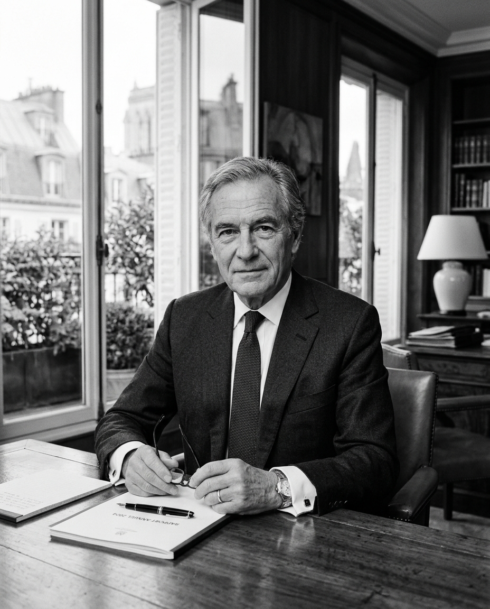
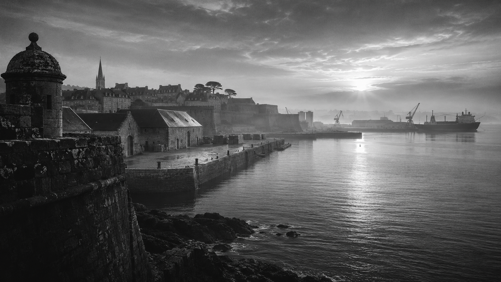

IL PROFILORoland Balleroy, l’erede che ha cambiato scala
Da Odet ai mercati internazionali: il percorso dell’uomo che guida il gruppo dal 1981.
SCOPRI IL PROFILO ↗Da TV4 ad AndLast: il magnate cresciuto a Roma ha fatto delle situazioni difficili una specialità.
LEGGI IL PROFILO ↗Le persone, le imprese e le scelte
dietro i grandi patrimoni.

IL PROFILODa Odet ai mercati internazionali: il percorso dell’uomo che guida il gruppo dal 1981.
SCOPRI IL PROFILO ↗Quattro gruppi, quattro modi
di costruire un patrimonio.
Fondato a Parigi da Pascal De Santis nel 1979, il gruppo ha sede a New York e opera tra notizie, intrattenimento ed esperienze.
Il gruppo di Edward Kincaid riunisce studi, reti televisive e giornali. La holding familiare Bourbon controlla il 56% dei voti.
Da Midland, in Texas, Caleb e Nathan Thornton guidano una conglomerata privata attiva tra energia, chimica e materiali.
Con sede a Sydney, Whitfield Prospecting opera tra miniere e agricoltura. Hannah Whitfield ne è presidente e amministratrice delegata.

Un’attività nata dalla carta, diventata un gruppo presente nel lusso, nelle aste, nei media e nella logistica. Una storia di famiglia e di capitale.
Le date che collegano
imprese e dinastie.
Thienry Balleroy fonda in Bretagna un’azienda di carta per sigarette.
Il ramo newyorchese dei Löwenstein tenta di acquisire Vandermore Chase.
Pascal De Santis fonda a Parigi il gruppo destinato a espandersi nei media.
De Santis e Balleroy si contendono l’emittente francese. La partita si chiude nel 1994 a favore di De Santis.
Le grandi fortune sono anche grandi racconti. TRUE è uno spazio narrativo immaginario: personaggi, aziende e vicende sono inventati. Eventuali nomi e luoghi reali compaiono in un contesto di finzione.
TORNA ALL’INIZIO ↑